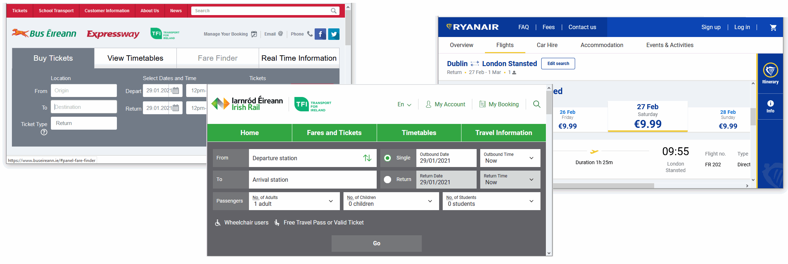

About website colours
In deciding which colours to use with your web pages, you may find this list of resources in a previous Tutorial helpful.
Below is a colour psychology infographic from one of the above resources.
Keep in mind that website users are people. And people are complex. So the above chart will not hold true for every individual. However, this information is a good, research-based starting point for your website colour choices.
Choosing your dominant brand colour
Your website will have one main or dominant colour that will also be the main colour of your 'brand'.
For Bus Eireann, for example, the main brand colour is red. For Irish Rail, it is green. And for Ryanair, it is blue.
For choosing a modern-looking dominant colour for your website, check out the Flat Colours UI and Bootflat websites.
You can see some striking colour choices on the Experiments section of the Cody House website.
If you are using the Firefox Mozilla web browser, you can quickly 'grab' the hex code of any colour on a displayed web page as follows:
- From the menubar at the top of the browser window, click Tools and then Web Developer.
- From the sub-menu displayed, click the Eyedropper option.
- With your mouse, hover over any part of the web page to see the relevant hex colour code.

- Next, click on the highlighted area to copy the hex colour code. You can now paste this code into your CSS stylesheet file.
Creating your colour palette
In addition to your chosen dominant colour, you will need to select two or three other colours to create a colour combination or palette of colours that work together harmoniously.
Two good websites for helping you decide on a colour palette are Colour Hunt and Muzli Colours.
Colour and contrast accessibility
Some colour combinations that are easy for most people to read are difficult or impossible for others. It is estimated that about 20% of web users have some form of limited vision.
In particular, about 1 in 12 men and 1 in 200 women have some form of 'colour blindness'. That means about 5% of your website visitors will not experience your site the way you intended.
There is little point in creating great text content for your website if a large percentage of your website visitors struggle or cannot read what is on their screens.
An important factor is colour contrast – the difference between the foreground and background colours.
The WebAIM guidelines recommend a minimum contrast ratio of 4.5:1 for text on web pages. For headings and other large text, a contrast ratio of 3:1 is sufficient.
Notice the difference in the contrast ratios shown below. The image is from Google's web.dev website.
After you have chosen a colour palette, you are now ready to apply it to the website template.